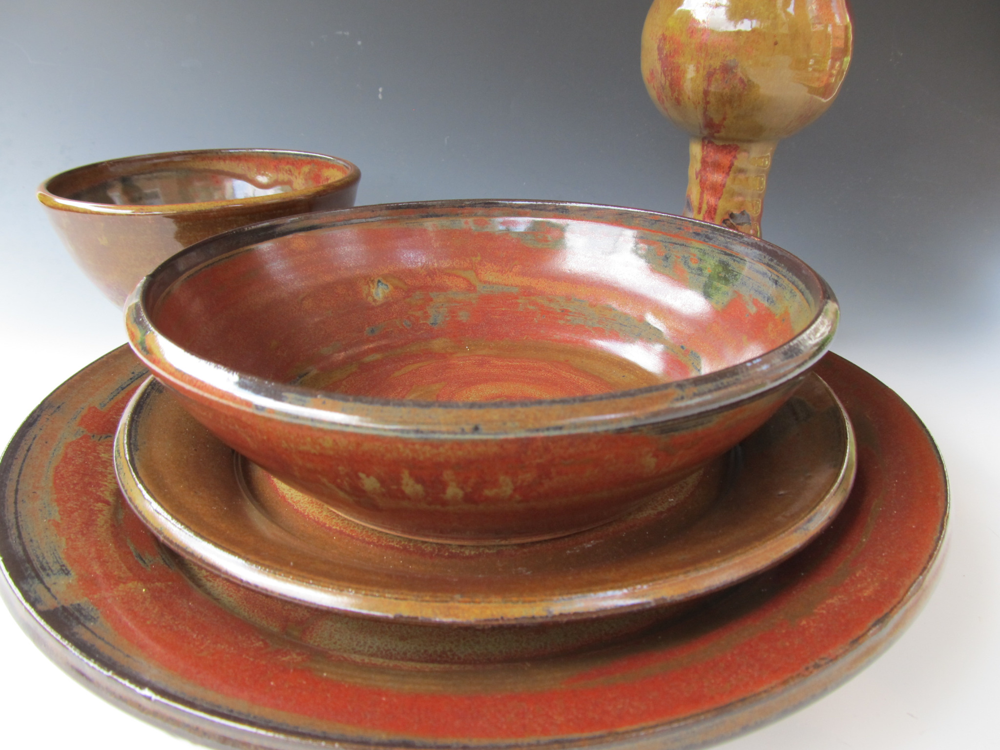
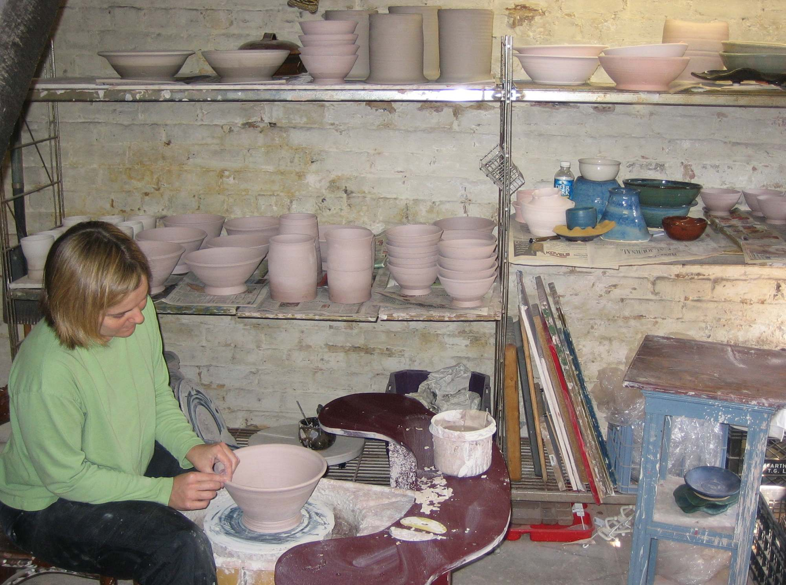
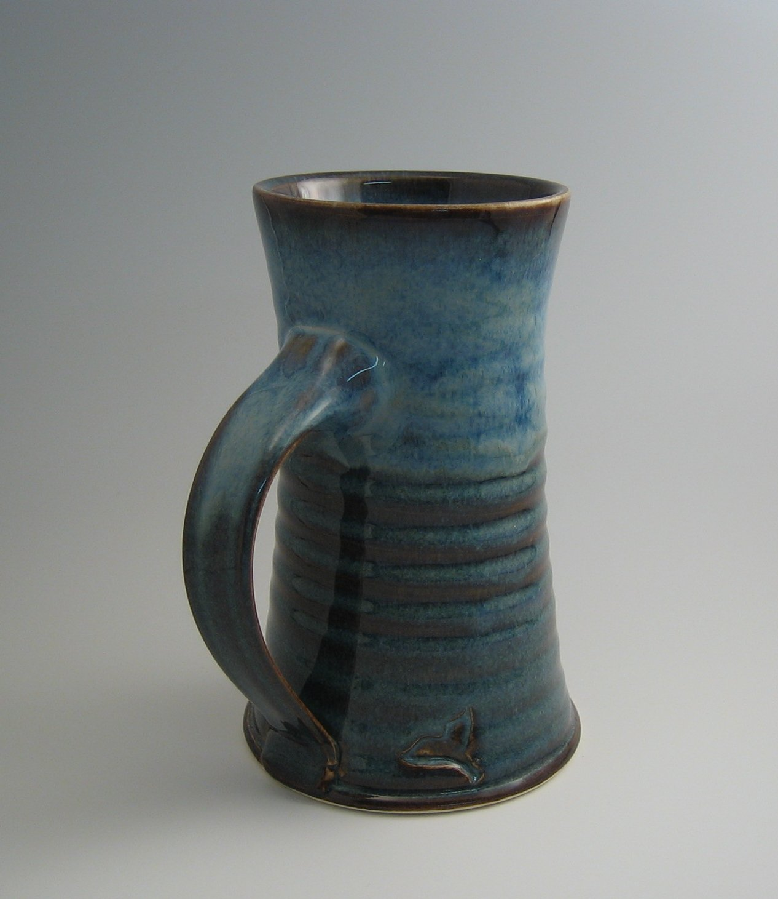
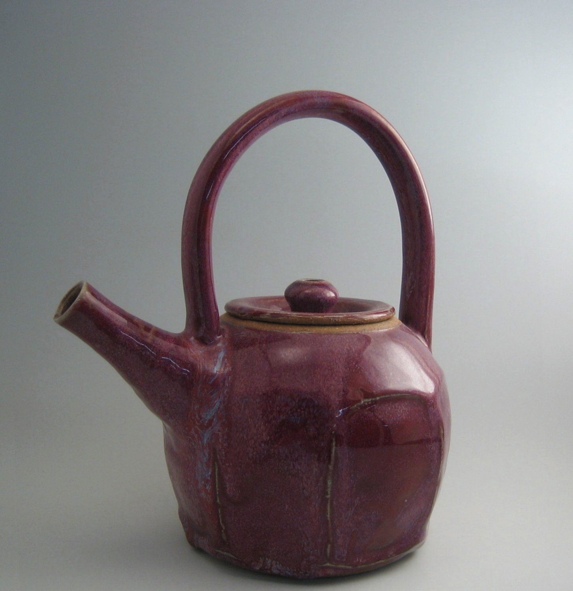
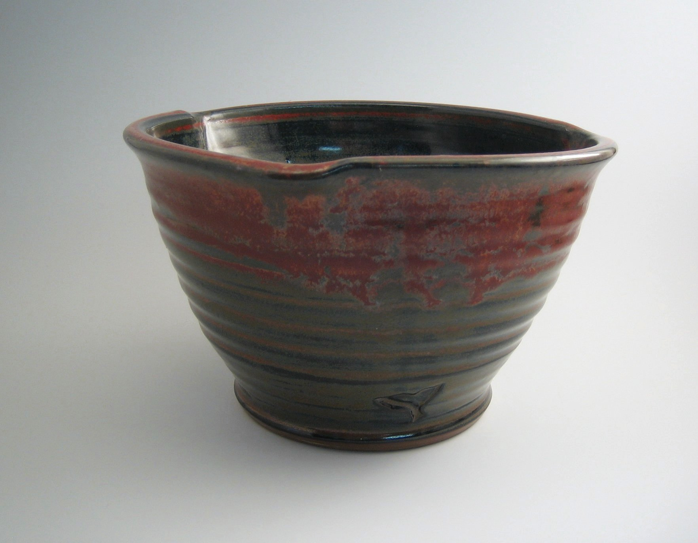
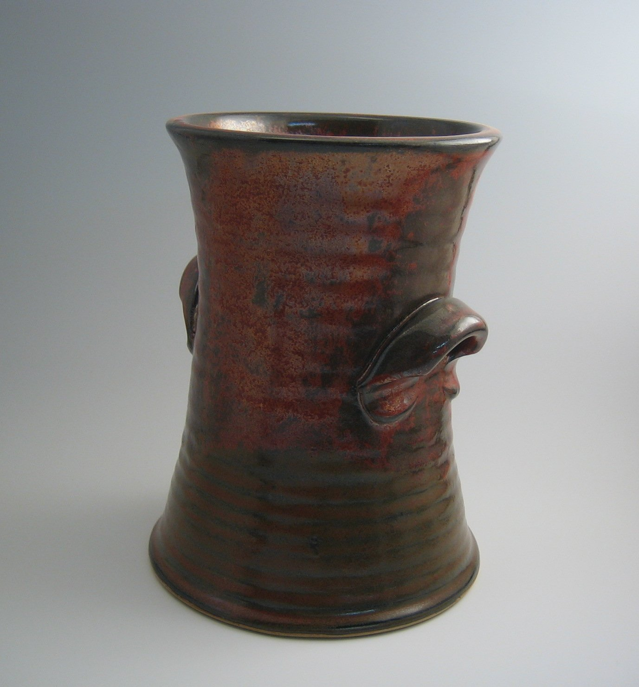
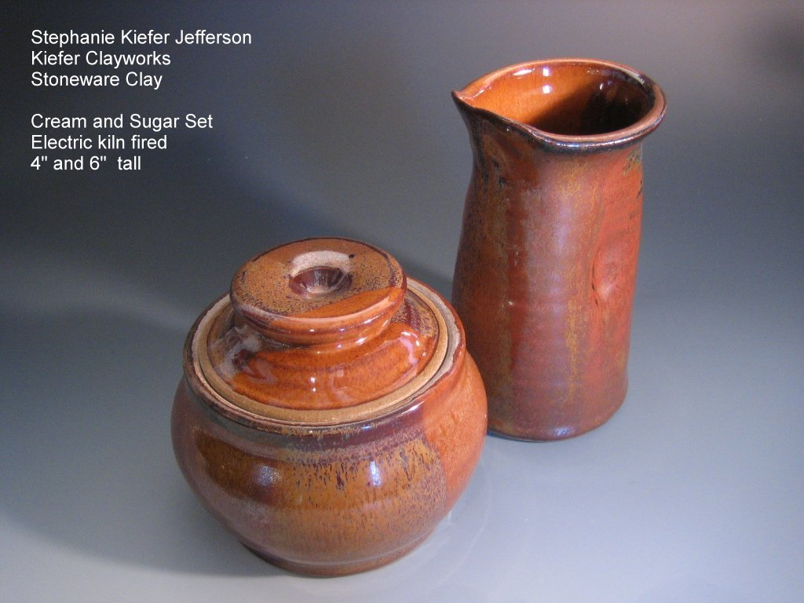
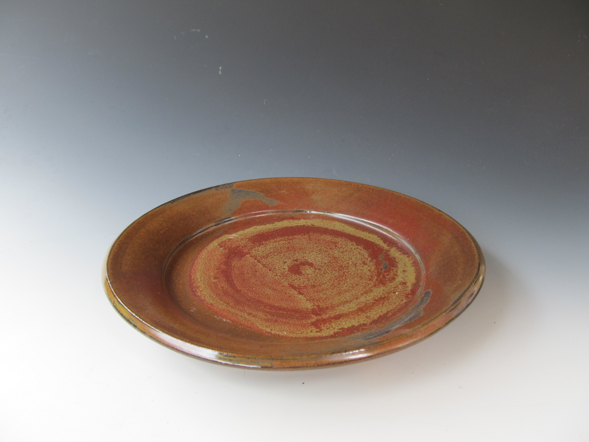

Functional stoneware, made by hand
Elevate the simple ritual of eating and drinking into artful, enjoyable experience
View the collectionHandcrafted by Steph Kiefer, in Richmond, Virginia.

I am a ceramic artist who creates functional pottery from stoneware clay. My primary ambition is to create pieces that bring beauty and joy to everyday life. I believe a well-crafted pot should not only function beautifully but also elevate the simple rituals of eating and drinking into artful, enjoyable experiences.
Every piece is handcrafted with durability and daily use in mind. All of my pottery is microwave and dishwasher safe. It is also oven safe; however, stoneware prefers gradual temperature changes. For best results, place your pottery in a cool oven and allow it to preheat slowly with the oven.






Date: August 7–8, 2026
Location: Blacksburg, VA
Booth: 85
All Kiefer Clayworks pottery is microwave and dishwasher safe. Stoneware is also oven safe but should be heated gradually to prevent thermal shock.